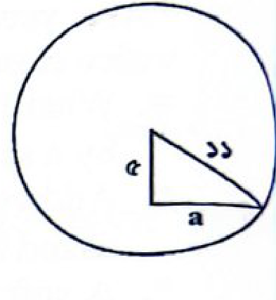

পিএসসি — সহকারী পরিচালক ২০২৫ (PSC — Assistant Director 2025)
📊
বিষয়ভিত্তিক প্রশ্নবণ্টন বিশ্লেষণ ছক
| বিষয় | বাংলা | English | বাংলাদেশ বিষয়াবলি | আন্তর্জাতিক | সাধারণ বিজ্ঞান | গণিত ও মানসিক দক্ষতা | ভূগোল ও পরিবেশ | নৈতিকতা | মোট প্রশ্ন |
|---|---|---|---|---|---|---|---|---|---|
| প্রশ্ন সংখ্যা | ২০ | ২০ | ২০ | ১০ | ১০ | ১৫ | ৪ | ১ | ১০০ |
প্রামাণ্য রিভিশন নোট ও সূত্রাবলি
সহকারী পরিচালক পরীক্ষা ২০২৫-এর ১০০টি প্রামাণ্য প্রশ্নের বিশদ ব্যাখ্যা হতে সংকলিত হ্যান্ডরিটেন মাস্টার রিভিশন
১. বাংলা ভাষা ও সাহিত্যের যুগসন্ধি ও কালজয়ী তথ্য
প্রাচীন ও অন্ধকার যুগ
- চর্যাপদ: ১৯০৭ সালে মহামহোপাধ্যায় হরপ্রসাদ শাস্ত্রী নেপালের রয়েল লাইব্রেরি থেকে আবিষ্কার করেন। ১৯১৬ সালে বঙ্গীয় সাহিত্য পরিষদ থেকে 'হাজার বছরের পুরাণ বাঙ্গালা ভাষায় রচিত বৌদ্ধ গান ও দোহা' নামে প্রকাশিত। এতে পদসংখ্যা ৫১টি, পদকর্তা ২৪ জন। প্রথম পদ রচয়িতা লুইপা, সর্বোচ্চ পদ (১৩টি) কাহ্নপা।
- শূন্যপুরাণ: অন্ধকার যুগের (১২০১-১৩৫০) বৌদ্ধধর্মীয় গ্রন্থ, রচয়িতা রামাই পণ্ডিত।
মধ্যযুগ ও আধুনিক যুগ
- ভারতচন্দ্র রায়গুণাকর: অন্নদামঙ্গল কাব্যের কবি। অমর উক্তি: ‘নগর পুড়িলে দেবালয় কি এড়ায়?’ এবং ‘আমার সন্তান যেন থাকে দুধে ভাতে’।
- পঞ্চপাণ্ডব: তিরিশের দশকের আধুনিকতাবাদী ৫ কবি— জীবনানন্দ দাশ, বুদ্ধদেব বসু, সুধীন্দ্রনাথ দত্ত, বিষ্ণু দে ও অমিয় চক্রবর্তী।
- রবীন্দ্র-নজরুল মৈত্রী: রবীন্দ্রনাথ ঠাকুর ‘বসন্ত’ নাটক নজরুলকে উৎসর্গ করেন; নজরুল প্রতিউত্তরে ‘সঞ্চিতা’ কাব্য রবীন্দ্রনাথকে উৎসর্গ করেন।
- উপকথা (Fable): পশুপাখির কাহিনী অবলম্বনে রচিত নীতিশিক্ষামূলক লোকসাহিত্য।
গুরুত্বপূর্ণ ব্যাকরণিক নিয়ম
- যুক্তবর্ণ বিশ্লেষণ: ষ্ফ = ষ্ + ফ (যেমন: আস্ফালন, নিষ্ফল)।
- সন্ধি: স্ব + অধীন = স্বাধীন (অ + অ = আ)।
- সমাস: মিস্ত্রীর রাজা = রাজমিস্ত্রী (ষষ্ঠী তৎপুরুষ; সমস্তপদে 'রাজা' শব্দ পূর্বে বসে)।
- পদ নির্ণয়: ‘গভীর নিশীথে প্রকৃতি সুপ্ত’ বাক্যে ‘নিশীথ’ বিশেষ্য পদ।
- শব্দোৎস: ‘ডেঙ্গু’ হলো স্প্যানিশ ভাষার শব্দ (অর্থ: সতর্ক থাকা)।
কালজয়ী গ্রন্থ ও রচয়িতা ছক
- ‘স্বাধীনতা হীনতায় কে বাঁচিতে চায়’ → রঙ্গলাল বন্দ্যোপাধ্যায় (পদ্মিনী উপাখ্যান)।
- ‘রাজা যায় রাজা আসে’ → আবুল হাসান (কাব্যগ্রন্থ)।
- ‘আপনারে বড় বলে, বড় সেই নয়’ → হরিশচন্দ্র মিত্র (বড় কে?)।
- ‘বিড়াল’ → বঙ্কিমচন্দ্র চট্টোপাধ্যায় (কমলাকান্তের দপ্তর-এর অন্তর্ভুক্ত প্রবন্ধ)।
- ‘চতুরঙ্গ’ → রবীন্দ্রনাথ ঠাকুর (উপন্যাস, ১৯১৬; ৪টি চরিত্র/অঙ্গ)।
২. English Grammar & Literary Mastery
Grammar Rules & Formations
- Preposition vs Conjunction: “The problem is anything but easy” — এখানে but অর্থ 'except', যা Preposition।
- Fixed Expression: Prohibit + somebody + from + verb-ing (I prohibited him from going there)।
- Collective Noun Gender: সকল collective noun ব্যাকরণগতভাবে Neuter Gender।
- Dual Plurals: Brother → Brothers (রক্তের ভাই) এবং Brethren (কোনো গোষ্ঠী বা সম্প্রদায়ের সদস্য)।
- Participles: “A burnt child dreads the fire” — burnt হলো Past Participle (যা Adjective হিসেবে কাজ করে)।
- Noun Form: Replete (Adj) → Repletion (Noun)।
Shakespeare & Literary Figures
- Othello: “The green-eyed monster” idiom-টি শেক্সপিয়রের Othello-তে ব্যবহৃত, যা jealousy (ঈর্ষা)-র প্রতীক।
- Hamlet: “There are more things in heaven and earth, Horatio...” — শেক্সপিয়রের ট্র্যাজেডি Hamlet থেকে উদ্ধৃত।
- Macbeth: রাজা ডানকান হত্যার অপরাধকে Regicide বলা হয় (Rex = King)।
- Hyperbole: কোনো কিছুকে বাস্তবের চেয়ে অনেক বাড়িয়ে প্রকাশ করার আলঙ্কারিক রীতি।
- Proverb: “Fools rush in where angels fear to tread”।
৩. বাংলাদেশ, মুক্তিযুদ্ধ ও আন্তর্জাতিক টাইমলাইন
বাংলাদেশ বিষয়াবলি
- ভাষা আন্দোলন: ২৩ ফেব্রুয়ারি ১৯৫২ সালে ঢাকায় প্রথম শহীদ মিনার নির্মিত হয় (স্থপতি হামিদুর রহমান)। ২৫ ফেব্রুয়ারি ১৯৪৮ সালে ধীরেন্দ্রনাথ দত্ত গণপরিষদে প্রথম রাষ্ট্রভাষার দাবি জানান।
- ১ম জাতীয় সংসদ নির্বাচন: ৭ মার্চ ১৯৭৩ সালে অনুষ্ঠিত হয় (১৪টি দল অংশগ্রহণ করে)।
- আদমশুমারি: ১৯৭৪ সালে প্রথম জনশুমারি (জনসংখ্যা ৭.৬৪ কোটি, বৃদ্ধির হার ২.৪৮%)। ২০২২ সালে অনুষ্ঠিত হয় ৬ষ্ঠ জনশুমারি।
- ঐতিহাসিক জনপদ: প্রাচীনতম জনপদ 'পুণ্ড্র' (রাজধানী পুণ্ড্রনগর/মহাস্থানগড়)। সোমপুর মহাবিহার পাল রাজা ধর্মপাল কর্তৃক নওগাঁর পাহাড়পুরে নির্মিত।
- ক্ষুদ্র নৃগোষ্ঠী: সমতলে সবচেয়ে বেশি জনসংখ্যা সাঁওতালদের।
আন্তর্জাতিক কূটনীতি ও সমাজ
- নেকড়ে যোদ্ধা কূটনীতি (Wolf Warrior Diplomacy): চীনের আগ্রাসী জাতীয়তাবাদী কূটনীতি।
- Grand Ethiopian Renaissance Dam: নীলনদের উৎস ব্লু নীলে ইথিওপিয়ার বাঁধ নিয়ে মিশর-ইথিওপিয়া বিরোধ।
- জোটনিরপেক্ষ আন্দোলন (NAM): ১৯৫৫ সালের বান্দুং সম্মেলনের প্রেক্ষিতে ১৯৬১ সালে বেলগ্রেডে গঠিত।
- New Development Bank (NDB): ব্রিকসের প্রতিষ্ঠিত ব্যাংক; বাংলাদেশ ২০২১ সালে সদস্য হয়।
- মানবাধিকার দিবস: ১০ ডিসেম্বর (১৯৪৮ সালে সার্বজনীন মানবাধিকার ঘোষণা গৃহীত)।
মানব প্রজন্মের আধুনিক বিভাজন ছক (Human Generations)
• সাইলেন্ট জেনারেশন: ১৯২৮–১৯৪৫ |
• বেবি বুমার্স: ১৯৪৬–১৯৬৪ |
• জেনারেশন এক্স: ১৯৬৫–১৯৮০
• জেনারেশন ওয়াই (মিলেনিয়ালস): ১৯৮১–১৯৯৬ |
• জেনারেশন জেড (জেন-জি): ১৯৯৭–২০১২ |
• জেনারেশন আলফা: ২০১৩–২০২৪
৪. সাধারণ বিজ্ঞান ও গাণিতিক ফর্মুলা কার্ড
সাধারণ বিজ্ঞান ও পরিবেশ
- অ্যাকোয়া রেজিয়া (রাজ-অম্ল): ১ মোল গাঢ় HNO₃ + ৩ মোল গাঢ় HCl; স্বর্ণ ও প্ল্যাটিনাম গলাতে ব্যবহৃত হয়।
- শব্দের বেগ: লোহায় শব্দের বেগ ৫,১২০ মি/সেকেন্ড, যা বাতাসের (৩৪৩ মি/সে) প্রায় ১৫ গুণ।
- সালোকসংশ্লেষণ: লাল আলোতে সর্বোচ্চ সংঘটিত হয়; সবুজ আলোতে প্রায় হয় না।
- রোগতত্ত্ব: হেপাটাইটিস ভাইরাসজনিত রোগ (যকৃতে আক্রমণ করে); কুষ্ঠ, টাইফয়েড, কলেরা ও গনোরিয়া ব্যাকটেরিয়াজনিত।
- চা গরম রাখার বিজ্ঞান: সাদা রঙের কাপের তাপ বিকিরণ ক্ষমতা কম হওয়ায় এতে চা দীর্ঘক্ষণ গরম থাকে।
গাণিতিক সূত্র ও নিয়মাবলি
- সমবাহু ত্রিভুজ: ক্ষেত্রফল = \(\frac{\sqrt{3}}{4} a^2\)
- বৃত্তের জ্যা ও ব্যাসার্ধ: জ্যা-এর দৈর্ঘ্য = \(2\sqrt{R^2 - d^2}\)
- ফাঁপা গোলকের আয়তন: \(V = \frac{4}{3} \pi r^3\)
- দ্য মরগ্যানের সূত্র: \((A \cup B)' = A' \cap B'\) এবং \((A \cap B)' = A' \cup B'\)
- সমান্তর ধারা: $n$-তম পদ = $a + (n - 1)d$
- বহুভুজের ত্রিভুজ সমাবেশ: $n$-ভুজের শীর্ষবিন্দু দ্বারা ত্রিভুজ সংখ্যা = \(^nC_3\) (পঞ্চভুজে \(^5C_3 = 10\))
1. ‘পঞ্চপাণ্ডব’ বলা হয়-
সঠিক উত্তর: ক
বাংলা সাহিত্যে আধুনিকতাবাদী ৫ জন কবিকে পঞ্চপাণ্ডব, কল্লোলের ও তিরিশের কবি বলা হয়। তারা হলেন - জীবনানন্দ দাশ, বুদ্ধদেব বসু, সুধীন্দ্রনাথ দত্ত, বিষ্ণু দে, অমিয় চক্রবর্তী। এই ৫ জন হলেন ত্রিশের দশকের কবি। এরা উচ্চ শিক্ষিত, পাঁচজনই ইংরেজির ছাত্র এবং অক্লান্ত কাব্যবলয় নির্মাণের চেষ্টা করে সফল হয়েছিলেন। এই পাঁচজন আধুনিক কবি বাংলা সাহিত্যে ‘পঞ্চপাণ্ডব’ নামে বিশেষ খ্যাতি অর্জন করেন।
2. “The green-eyed monster” means-
সঠিক বিকল্প: ঘ
“The green-eyed monster” একটি ইংরেজি idiom, যা প্রথম ব্যবহৃত হয় উইলিয়াম শেক্সপিয়রের নাটক Othello (ওথেলো)-তে। এখানে “green” (সবুজ) রংটি ঈর্ষা ও হিংসার প্রতীক হিসেবে ব্যবহৃত হয়েছে। শেক্সপিয়র ঈর্ষাকে এক প্রকার ভয়ংকর দানবের সঙ্গে তুলনা করেছেন, যে মানুষকে গ্রাস করে ফেলে।
অর্থ: danger (বিপদ); hatred (ঘৃণা); envy (লোভ); jealousy (হিংসা)।
অর্থ: danger (বিপদ); hatred (ঘৃণা); envy (লোভ); jealousy (হিংসা)।
3. একটি সমবাহু ত্রিভুজের একটি বাহুর দৈর্ঘ্য ১৮ মিটার হলে, ত্রিভুজটির ক্ষেত্রফল কত বর্গমিটার?
সঠিক উত্তর: গ
সমাধান:
সমবাহু ত্রিভুজের ক্ষেত্রফল = (√৩ / ৪) a² বর্গ একক
= (√৩ / ৪) × (১৮)² বর্গ মি.
= (√৩ / ৪) × ৩২৪ = ৮১√৩ বর্গ মি.।
সমবাহু ত্রিভুজের ক্ষেত্রফল = (√৩ / ৪) a² বর্গ একক
= (√৩ / ৪) × (১৮)² বর্গ মি.
= (√৩ / ৪) × ৩২৪ = ৮১√৩ বর্গ মি.।
4. ‘স্বাধীনতা হীনতায় কে বাঁচিতে চায়।’ চরণটির রচয়িতা-
সঠিক উত্তর: গ
রঙ্গলাল বন্দ্যোপাধ্যায় ‘পদ্মিনী উপাখ্যান’ কাব্যের ‘স্বাধীনতা হীনতায় কে বাঁচিতে চায়’ স্তবকটি দেশাত্মবোধের এক শাশ্বত বাণী বিশেষ। তাঁর রচিত কাব্যগ্রন্থ - পদ্মিনী উপাখ্যান, কর্মদেবী, শূরসুন্দরী, নীতি কুসুমাঞ্জলি ও কাঞ্চী কাবেরী।
5. The problem is anything but easy. Here ‘but’ is a/an-
সঠিক উত্তর: গ
এখানে, but শব্দটি Preposition হিসেবে বসেছে। ‘anything but’ ফ্রেজটিতে but অর্থ 'except' (ব্যতীত/ছাড়া), যা Preposition হিসেবে কাজ করে।
6. কোন রংয়ের কাপে চা বেশি সময় গরম থাকে?
সঠিক উত্তর: ক
সাদা রঙের কাপে চা বেশি সময় গরম থাকে। আমরা জানি কালো রংয়ের তাপ শোষণ ক্ষমতা ও বিকিরণ ক্ষমতা বেশি। অন্যদিকে সাদা রঙের কাপের তাপ বিকিরণ ক্ষমতা কম হওয়ায় তা থেকে তাপ সহজে বাইরে বেরিয়ে যায় না। ফলে সাদা রঙের কাপে চা বেশি সময় গরম থাকে।
7. সার্বিক সেট U এর যেকোনো উপসেট A ও B এর জন্য কোনটি সঠিক?
সঠিক উত্তর: গ
সমাধান:
সার্বিক সেট U-এর যেকোনো উপসেট A ও B-এর জন্য সঠিক হলো দ্য মরগ্যানের সূত্র (De Morgan's law), যা বলে:
(A ∪ B)' = A' ∩ B' এবং (A ∩ B)' = A' ∪ B'।
দ্য মরগ্যানের সূত্রানুসারে, A এবং B-এর ছেদ সেটের পরিপূরক তাদের পৃথক পরিপূরক সেটের সংযোগের সমান।
সার্বিক সেট U-এর যেকোনো উপসেট A ও B-এর জন্য সঠিক হলো দ্য মরগ্যানের সূত্র (De Morgan's law), যা বলে:
(A ∪ B)' = A' ∩ B' এবং (A ∩ B)' = A' ∪ B'।
দ্য মরগ্যানের সূত্রানুসারে, A এবং B-এর ছেদ সেটের পরিপূরক তাদের পৃথক পরিপূরক সেটের সংযোগের সমান।
8. ঢাকায় প্রথম শহীদ মিনার তৈরি হয়?
সঠিক উত্তর: খ
কেন্দ্রীয় শহীদ মিনার বায়ান্নর ভাষা আন্দোলনের একটি স্মৃতিসৌধ। এটি ঢাকার কেন্দ্রস্থলে ঢাকা মেডিকেল কলেজ প্রাঙ্গনে অবস্থিত। এর স্থপতি হামিদুর রহমান। ঢাকায় প্রথম শহীদ মিনার তৈরি হয় ২৩ ফেব্রুয়ারি ১৯৫২।
9. বাংলাদেশের প্রধান বীজ উৎপাদনকারী সরকারি প্রতিষ্ঠান-
সঠিক উত্তর: গ
BARI - এর পূর্ণরূপ Bangladesh Agricultural Research Institute। এটি দেশের বৃহত্তম বহুবিধ ফসল গবেষণা প্রতিষ্ঠান। BINA (Bangladesh Institute of Nuclear Agriculture) পরমাণু কৃষি গবেষণা প্রতিষ্ঠান। BRRI (Bangladesh Rice Research Institute) ধান গবেষণা প্রতিষ্ঠান। আর BADC (Bangladesh Agricultural Development Corporation) বাংলাদেশে উচ্চ ফলনশীল বিভিন্ন ফসলের বীজ উৎপাদন, সংরক্ষণ ও সরবরাহ বৃদ্ধি করা, সেচ প্রযুক্তি উন্নয়ন, ভূ-উপরিভাগের পানির সর্বোত্তম ব্যবহার ও মানসম্পন্ন সার সরবরাহ করে।
10. একটি বড় মাপের ভূমিকম্পের পর কী ঘটার সম্ভাবনা থাকে?
সঠিক বিকল্প: ঘ
সুনামি একটি প্রাকৃতিক দুর্যোগ। এটি মূলত “জাপানি শব্দ; এর অর্থ পোতাশ্রয় ঢেউ (Harbor Wave)। সমুদ্র তলদেশে প্রচণ্ড মাত্রার ভূকম্পন বা অগ্ন্যুৎপাতের ফলে, কিংবা অন্য কোনো কারণে, ভূ-আলোড়নের সৃষ্টি হলে বিস্তৃত এলাকা জুড়ে প্রবল ঢেউয়ের সৃষ্টি হয়। ভূকম্পনে সৃষ্ট এ সমুদ্র ঢেউ সুনামি নামে পরিচিত।
11. ৫০০ এর চেয়ে বড় ক্ষুদ্রতম মৌলিক সংখ্যা কোনটি?
সঠিক উত্তর: গ
সমাধান:
৫০১ = ৩ × ১৬৭
৫০৭ = ৩ × ১৬৯
৫০৩ = ১ × ৫০৩ (মৌলিক)
৫০৯ = ১ × ৫০৯ (মৌলিক)
যেহেতু ৫০৩ এবং ৫০৯ উভয়ই ১ এবং ঐ সংখ্যা ছাড়া অন্য কোনো সংখ্যা দ্বারা ভাগ করা যায় না, তাই তারা মৌলিক। এদের মধ্যে ৫০০-এর চেয়ে বড় ক্ষুদ্রতম মৌলিক সংখ্যাটি হলো ৫০৩।
৫০১ = ৩ × ১৬৭
৫০৭ = ৩ × ১৬৯
৫০৩ = ১ × ৫০৩ (মৌলিক)
৫০৯ = ১ × ৫০৯ (মৌলিক)
যেহেতু ৫০৩ এবং ৫০৯ উভয়ই ১ এবং ঐ সংখ্যা ছাড়া অন্য কোনো সংখ্যা দ্বারা ভাগ করা যায় না, তাই তারা মৌলিক। এদের মধ্যে ৫০০-এর চেয়ে বড় ক্ষুদ্রতম মৌলিক সংখ্যাটি হলো ৫০৩।
12. চর্যাপদে কতজন কবির পদ রয়েছে?
সঠিক বিকল্প: ঘ
প্রাচীন যুগের একমাত্র নিদর্শন চর্যাপদ গানের সংকলন বা সাধন সংগীত, যা বৌদ্ধ সহজিয়াগণ রচনা করেন। এতে বিধৃত হয়েছে বৌদ্ধ ধর্মের তত্ত্বকথা। মহামহোপাধ্যায় হরপ্রসাদ শাস্ত্রী ১৯০৭ সালে নেপালের রাজদরবার (রয়েল লাইব্রেরি) থেকে চর্যাপদ আবিষ্কার করেন। তার সম্পাদনায় ১৯১৬ খ্রিস্টাব্দে কলকাতার বঙ্গীয় সাহিত্য পরিষদ থেকে 'হাজার বছরের পুরাণ বাঙ্গালা ভাষায় রচিত বৌদ্ধ গান ও দোহা' নামে প্রকাশিত হয়। এতে পদসংখ্যা ৫১টি এবং পদকর্তা ২৪ জন। প্রথম পদের রচয়িতা লুইপা এবং সর্বোচ্চ পদের (১৩টি) রচয়িতা কাহ্নপা।
13. ‘September on Jessore Road’ কবিতাটির রচয়িতা কে?
সঠিক উত্তর: গ
অ্যালেন গিন্সবার্গ ছিলেন মার্কিন কবি এবং গীতিকার। ৯ সেপ্টেম্বর, ১৯৭১ তিনি ভারত থেকে নৌকায় করে বাংলাদেশের যশোর সীমান্তে পৌঁছান। সীমান্তবর্তী শরণার্থী শিবিরগুলোতে বসবাসকারী উদ্বাস্তুদের দুর্দশা প্রত্যক্ষ করে তিনি “সেপ্টেম্বর অন যশোর রোড” কবিতা লেখেন।
14. বাংলাদেশের জলবায়ু কী ধরণের?
সঠিক উত্তর: খ
বাংলাদেশের মাঝামাঝি স্থান দিয়ে কর্কটক্রান্তি রেখা অতিক্রম করায় এখানে ক্রান্তীয় জলবায়ু বিদ্যমান। কিন্তু মৌসুমি বায়ুর প্রভাব অত্যধিক হওয়ায় বাংলাদেশের জলবায়ু ‘ক্রান্তীয় মৌসুমী জলবায়ু’ (Tropical monsoon climate) নামে পরিচিত। এখানে ঋতু পরিবর্তনের সাথে সাথে বায়ুর দিক পরিবর্তন হয়। গ্রীষ্মকালে বাংলাদেশের বায়ু দক্ষিণ দিক থেকে উত্তর দিকে প্রবাহিত হয়। আর শীতকালে বায়ু উত্তর দিক থেকে দক্ষিণ দিকে প্রবাহিত হয়।
15. “Beside looting all the valuables, the hoodlum also stabbed the pedestrian violently” -This an example of a/an-
সঠিক উত্তর: ক
Simple Sentence-এ একটি মাত্র Subject এবং একটিমাত্র Finite verb (সমাপিকা ক্রিয়া) থাকে। প্রদত্ত বাক্যে একটিমাত্র finite verb 'stabbed' রয়েছে, তাই এটি Simple Sentence।
16. ‘রাজা যায় রাজা আসে’ কাব্যগ্রন্থের রচয়িতা কে?
সঠিক উত্তর: খ
‘রাজা যায় রাজা আসে’ কাব্যগ্রন্থের রচয়িতা কবি ও সাংবাদিক আবুল হাসান। আবুল হাসানের আসল নাম আবুল হোসেন মিয়া। মাত্র এক দশক কাব্য সাধনা করে আধুনিক বাংলা কাব্যের ইতিহাসে বিশিষ্ট স্থান অধিকার করে আছেন। তাঁর অন্যান্য উল্লেখযোগ্য কাব্যগ্রন্থ: যে তুমি হরণ করো, পৃথক পালঙ্ক।
17. ‘ডেঙ্গু’ শব্দের উৎস ভাষা-
সঠিক উত্তর: ক
স্প্যানিশ শব্দ ‘ডেঙ্গু’ যার অর্থ ‘সতর্ক থাকা’। ডেঙ্গু জ্বরের কারণ হলো ডেঙ্গু ভাইরাস। এডিস মশার কামড়ে এ রোগ ছড়ায়।
18. স্বর্ণ গলাতে কোন কোন এসিডের ব্যবহূত হয়?
সঠিক উত্তর: গ
এক মোল গাঢ় নাইট্রিক এসিড (HNO3) এবং তিন মোল গাঢ় হাইড্রোক্লোরিক এসিডের (HCl) মিশ্রণকে অ্যাকোয়া রেজিয়া বা রাজ-অম্ল বলে। অভিজাত ধাতুসমূহ (যেমন- স্বর্ণ, প্ল্যাটিনাম) অ্যাকোয়া রেজিয়া বা রাজ অম্লে দ্রবীভূত হয়। এককভাবে নাইট্রিক অ্যাসিড সোনাকে দ্রবীভূত করতে পারে না, কিন্তু হাইড্রোক্লোরিক অ্যাসিডের সাথে মিশে এটি সোনা ও অন্যান্য মূল্যবান ধাতুকে দ্রবীভূত করার ক্ষমতা লাভ করে।
19. কোথায় সাঁতার কাটা সহজ?
সঠিক বিকল্প: ঘ
পুকুরের পানির চেয়ে সমুদ্রের পানিতে সাঁতার কাটা সহজ কারণ সমুদ্রের পানিতে নানা ধরনের লবণ দ্রবীভূত থাকে। তাই সমুদ্রের পানির ঘনত্ব নদীর পানি বা পুকুরের পানির চেয়ে বেশি এবং প্লবতা বল বেশি কাজ করে।
20. ৫ ১/৪ ও ২ ১/৮ এর ল.সা.গু কত?
সঠিক বিকল্প: ঘ
সমাধান:
৫ ১/৪ = ২১/৪ ও ২ ১/৮ = ১৭/৮
ভগ্নাংশ দুটির লব = ২১, ১৭ এবং হর = ৪, ৮
২১, ১৭ লব দুটির ল.সা.গু. = ২১ × ১৭ = ৩৫৭
৪, ৮ হর দুটির গ.সা.গু. = ৪
মূল নিয়ম অনুযায়ী লবগুলোর ল.সা.গু ÷ হরগুলোর গ.সা.গু = ৩৫৭/৪ (প্রশ্নে অপশন ঘ তে ৩৫৭/৮ মুদ্রিত আছে)।
৫ ১/৪ = ২১/৪ ও ২ ১/৮ = ১৭/৮
ভগ্নাংশ দুটির লব = ২১, ১৭ এবং হর = ৪, ৮
২১, ১৭ লব দুটির ল.সা.গু. = ২১ × ১৭ = ৩৫৭
৪, ৮ হর দুটির গ.সা.গু. = ৪
মূল নিয়ম অনুযায়ী লবগুলোর ল.সা.গু ÷ হরগুলোর গ.সা.গু = ৩৫৭/৪ (প্রশ্নে অপশন ঘ তে ৩৫৭/৮ মুদ্রিত আছে)।
21. জাতিসংঘ সাধারণ পরিষদে এ পর্যন্ত কতজন নারী সভাপতিত্ব করেছেন?
সঠিক উত্তর: ক
এ পর্যন্ত ৫ জন নারী সাধারণ পরিষদের সভাপতি হয়েছেন। জাতিসংঘের সাধারণ পরিষদের প্রথম নারী সভাপতি ভারতের প্রথম প্রধানমন্ত্রী পণ্ডিত জওহরলাল নেহেরুর বোন বিজয়া লক্ষ্মী পণ্ডিত। জাতিসংঘ সাধারণ পরিষদের পঞ্চম নারী সভাপতি হিসেবে নির্বাচিত হয়েছেন জার্মানির Annalena Baerbock (২০২৫)।
22. Choose the correct sentence from the following.
সঠিক উত্তর: গ
Prohibit somebody from doing something অর্থ কাউকে কোনো কিছু করা থেকে নিষেধ / বারণ করা। তাই সঠিক বাক্য: I prohibited him from going there.
23. Which one is the correct spelling?
সঠিক উত্তর: খ
সঠিক বানান হলো Aquarium (মাছের চৌবাচ্চা)। বাকিগুলোর সঠিক রূপ: Assassination (গুপ্তহত্যা); armature (বর্ম); asylum (আশ্রয়)।
24. ঢাকা গেইট নির্মাতা কে?
সঠিক উত্তর: খ
মীর জুমলার গেট ঢাকা বিশ্ববিদ্যালয় এলাকার একটি ঐতিহাসিক মোগল স্থাপনা। এই গেটটি ঢাকা গেট, ময়মনসিংহ গেট নামেও পরিচিত। বিশ্ববিদ্যালয় এলাকার কার্জন হল ছাড়িয়ে দোয়েল চত্বর হয়ে বাংলা একাডেমি যেতে চোখে পড়ে হলুদ রঙের মীর জুমলার তোরণ।
25. মীর মশাররফ হোসেনের ‘মোসলেম বীরত্ব’ কোন ধরণের গ্রন্থ?
সঠিক উত্তর: খ
‘মোসলেম বীরত্ব’ - মীর মশাররফ হোসেন রচিত একটি কাব্যগ্রন্থ। কাব্যটি প্রকাশিত হয় ২৫ আষাঢ় ১৩১৪ বঙ্গাব্দে (জুলাই, ১৯০৭ সালে)। তাঁর অন্যান্য কাব্যগ্রন্থগুলো হলো - মদিনার গৌরব, হযরত বেলালের জীবনী, বিবি খাদিজার বিবাহ ইত্যাদি।
26. পলাশীর যুদ্ধ কবে হয়েছিল?
সঠিক উত্তর: গ
বাংলার শেষ স্বাধীন নবাব সিরাজউদ্দৌলার ও ফরাসি মিত্রদের সাথে ব্রিটিশ ইস্ট ইন্ডিয়া কোম্পানির পলাশী নামক স্থানে যে যুদ্ধ সংঘটিত হয়েছিল তাই পলাশীর যুদ্ধ নামে পরিচিত। ১৭৫৭ সালের ২৩ জুন তারিখে এই যুদ্ধ সংঘটিত হয়েছিল। এই যুদ্ধে সিরাজউদ্দৌলা পরাজিত হন এবং ভারতবর্ষে ইংরেজ শাসন প্রতিষ্ঠার পথ সূচিত হয়।
27. লোহা মাধ্যমে শব্দ বাতাসের তুলনায় কত গুণ দ্রুত চলে?
সঠিক উত্তর: গ
কঠিন পদার্থে অণুগুলো খুব কাছাকাছি থাকায় এক অণু থেকে অন্য অণুতে কম্পন বা শক্তি দ্রুত স্থানান্তরিত হয়, ফলে শব্দ দ্রুত প্রবাহিত হয়।
বাতাস (Air): শব্দের বেগ প্রায় ৩৪৩ মিটার/সেকেন্ড।
পানি (Water): প্রায় ১৪৮১ মিটার/সেকেন্ড।
লোহা (Iron): প্রায় ৫১২০ মিটার/সেকেন্ড (যা বাতাসে শব্দের বেগের চেয়ে প্রায় ১৫ গুণ দ্রুত)।
বাতাস (Air): শব্দের বেগ প্রায় ৩৪৩ মিটার/সেকেন্ড।
পানি (Water): প্রায় ১৪৮১ মিটার/সেকেন্ড।
লোহা (Iron): প্রায় ৫১২০ মিটার/সেকেন্ড (যা বাতাসে শব্দের বেগের চেয়ে প্রায় ১৫ গুণ দ্রুত)।
28. মুক্তিযুদ্ধের পটভূমিতে রচিত কাব্যগ্রন্থ কোনটি?
সঠিক উত্তর: ক
মুক্তিযুদ্ধের পটভূমিতে রচিত গ্রন্থ:
- বন্দী শিবির থেকে (কাব্যগ্রন্থ) : শামসুর রাহমান
- নেকড়ে অরণ্য (উপন্যাস) : শওকত ওসমান
- জীবন ও রাজনৈতিক বাস্তবতা (উপন্যাস) : শহীদুল জহির
- প্রিয়যোদ্ধা প্রিয়তম (উপন্যাস) : হারুন হাবীব
- বন্দী শিবির থেকে (কাব্যগ্রন্থ) : শামসুর রাহমান
- নেকড়ে অরণ্য (উপন্যাস) : শওকত ওসমান
- জীবন ও রাজনৈতিক বাস্তবতা (উপন্যাস) : শহীদুল জহির
- প্রিয়যোদ্ধা প্রিয়তম (উপন্যাস) : হারুন হাবীব
29. কোন বানানটি অশুদ্ধ?
সঠিক উত্তর: গ
ষ্ফ/ ষ্ক সংক্রান্ত নিয়ম:
ই-কারান্ত বা উ-কারান্ত উপসর্গের পর সাধারণত ‘ষ’ হয়। যেমন: আবিষ্কার, পরিষ্কার, নিষ্কর।
অ-কারান্ত শব্দের পর বিসর্গ থাকলে তা দন্ত্য ‘স’ হয়। যেমন: পুরস্কার, নমস্কার, তিরস্কার (বইয়ের উত্তরে তিরস্কারকে নির্দেশ করা হয়েছে)।
ই-কারান্ত বা উ-কারান্ত উপসর্গের পর সাধারণত ‘ষ’ হয়। যেমন: আবিষ্কার, পরিষ্কার, নিষ্কর।
অ-কারান্ত শব্দের পর বিসর্গ থাকলে তা দন্ত্য ‘স’ হয়। যেমন: পুরস্কার, নমস্কার, তিরস্কার (বইয়ের উত্তরে তিরস্কারকে নির্দেশ করা হয়েছে)।
30. বাংলাদেশের প্রথম জাতীয় সংসদ নির্বাচন কবে অনুষ্ঠিত হয়?
সঠিক উত্তর: গ
প্রথম জাতীয় সংসদ নির্বাচন অনুষ্ঠিত হয় ৭ মার্চ, ১৯৭৩ সালে। ১৪টি রাজনৈতিক দল এই নির্বাচনে অংশগ্রহণ করে।
31. 1 - x² + 2xy - y² এর উৎপাদক কোনটি?
সঠিক উত্তর: ক
সমাধান:
1 - x² + 2xy - y²
= 1 - (x² - 2xy + y²)
= 1² - (x - y)²
= {1 + (x - y)}{1 - (x - y)}
= (1 + x - y)(1 - x + y)।
1 - x² + 2xy - y²
= 1 - (x² - 2xy + y²)
= 1² - (x - y)²
= {1 + (x - y)}{1 - (x - y)}
= (1 + x - y)(1 - x + y)।
32. কোন আলোতে সালোকসংশ্লেষণ সবচেয়ে বেশি পরিমাণে হয়?
সঠিক উত্তর: গ
সালোকসংশ্লেষণ প্রক্রিয়ায় প্রয়োজনীয় শক্তির উৎস হলো আলো। দৃশ্যমান বর্ণালীর মধ্যে লাল আলোতে সবচেয়ে বেশি সালোকসংশ্লেষণ হয়। নীল আলোতেও ভালো হয়, কিন্তু সবুজ আলো পাতা প্রতিফলিত করায় সবুজ আলোতে সালোকসংশ্লেষণ হয় না বললেই চলে।
33. একটি লোহার ফাঁপা গোলকের বাইরের ব্যাস ১০ সে.মি. ও বেধ ২ সে.মি. হলে, গোলকের ফাঁপা অংশের আয়তন কত ঘন সে.মি.?
সঠিক উত্তর: খ
সমাধান:
ফাঁপা গোলকের ভেতরের অংশের ব্যাস = ১০ - (২ + ২) = ৬ সে.মি.
∴ ফাঁপা অংশের ব্যাসার্ধ, r = ৬/২ = ৩ সে.মি.
গোলকের আয়তন = (৪/৩) π r³
= (৪/৩) π × (৩)³ = (৪/৩) π × ২৭ = ৩৬π ঘন সে.মি.।
ফাঁপা গোলকের ভেতরের অংশের ব্যাস = ১০ - (২ + ২) = ৬ সে.মি.
∴ ফাঁপা অংশের ব্যাসার্ধ, r = ৬/২ = ৩ সে.মি.
গোলকের আয়তন = (৪/৩) π r³
= (৪/৩) π × (৩)³ = (৪/৩) π × ২৭ = ৩৬π ঘন সে.মি.।
34. কোনটি ব্যাক্টেরিয়া দ্বারা সৃষ্ট রোগ নয়?
সঠিক উত্তর: ক
ব্যাকটেরিয়া ঘটিত রোগ: নিউমোনিয়া, ডিপথেরিয়া, টাইফয়েড, যক্ষ্মা, গনোরিয়া, কলেরা, রক্ত আমাশয় ও প্লেগ।
হেপাটাইটিস মূলত একটি ভাইরাসজনিত রোগ, যা যকৃতে সংক্রমণ ঘটায়। Neisseria gonorrhoeae ব্যাকটেরিয়ার কারণে গনোরিয়া, Mycobacterium leprae-র কারণে কুষ্ঠ ও Salmonella typhi ব্যাকটেরিয়ার কারণে টাইফয়েড জ্বর হয়।
হেপাটাইটিস মূলত একটি ভাইরাসজনিত রোগ, যা যকৃতে সংক্রমণ ঘটায়। Neisseria gonorrhoeae ব্যাকটেরিয়ার কারণে গনোরিয়া, Mycobacterium leprae-র কারণে কুষ্ঠ ও Salmonella typhi ব্যাকটেরিয়ার কারণে টাইফয়েড জ্বর হয়।
35. ৩০,০০০ টাকার যৌগিক মুনাফায় ১২% হারে ২ বছর পর মুনাফা কত হবে?
সঠিক বিকল্প: ঘ
সমাধান:
মূলধন P = ৩০০০০ টাকা, সময় n = ২ বছর, সুদের হার r = ১২% = ০.১২
চক্রবৃদ্ধি মূলধন C = P(1 + r)ⁿ = ৩০০০০ × (১ + ০.১২)² = ৩০০০০ × ১.২৫৪৪ = ৩৭,৬৩২ টাকা।
∴ চক্রবৃদ্ধি মুনাফা = C - P = ৩৭,৬৩২ - ৩০,০০০ = ৭,৬৩২ টাকা।
মূলধন P = ৩০০০০ টাকা, সময় n = ২ বছর, সুদের হার r = ১২% = ০.১২
চক্রবৃদ্ধি মূলধন C = P(1 + r)ⁿ = ৩০০০০ × (১ + ০.১২)² = ৩০০০০ × ১.২৫৪৪ = ৩৭,৬৩২ টাকা।
∴ চক্রবৃদ্ধি মুনাফা = C - P = ৩৭,৬৩২ - ৩০,০০০ = ৭,৬৩২ টাকা।
36. ‘নেকড়ে যোদ্ধা কূটনীতি’ কোন দেশের সাথে সংশ্লিষ্ট?
সঠিক উত্তর: গ
চীনের প্রেসিডেন্ট শি জিনপিং এর coercive diplomacy কে wolf warrior diplomacy বা নেকড়েযোদ্ধা কূটনীতি বলা হয়। তিনি চীনা জাতীয়তাবাদ অনুভূতি শক্তিশালী করতে ও নিজেদের মর্যাদা বাড়ানোর কৌশলের অংশ হিসেবে চীনা কূটনীতিকরা ২০২০ সাল থেকেই এ কূটনীতি চালিয়ে আসছে। পশ্চিমা প্রতিকূলতা মোকাবিলায় চীনা কূটনীতিকদের এ কৌশল রুক্ষ ও আগ্রাসী। চীনা চলচ্চিত্র Wolf warrior থেকে এই পরিভাষাটি ধার করা হয়েছে।
37. বাংলাদেশের প্রথম আদমশুমারী অনুষ্ঠিত হয় কোন সালে?
সঠিক উত্তর: গ
কোন দেশ বা অঞ্চলের মানুষ গণনাকেই মূলত আদমশুমারি বা জনশুমারি বলে। বাংলাদেশে প্রতি ১০ বছর অন্তর অন্তর জনশুমারি করা হয়। দেশ স্বাধীনের পর ১৯৭৪ সালে বাংলাদেশে প্রথম জনশুমারি অনুষ্ঠিত হয়। এ জনশুমারি অনুযায়ী বাংলাদেশের জনসংখ্যা ছিল ৭,৬৩,৯৮,০০০ এবং জনসংখ্যা বৃদ্ধির হার ছিল ২.৪৮ শতাংশ। দেশ স্বাধীনের পর এ পর্যন্ত বাংলাদেশে ৬টি (১৯৭৪, ১৯৮১, ১৯৯১, ২০০১, ২০১১, ২০২২) জনশুমারি অনুষ্ঠিত হয়।
38. মৌলিক শব্দ কোনটি?
সঠিক উত্তর: গ
যেসব শব্দ বিশ্লেষণ করা যায় না বা ভেঙে আলাদা করা যায় না, সেগুলোকে মৌলিক শব্দ বলে। যেমন- আকাশ, গোলাপ, ফুল, গাছ, মাছ, কলম, মা, নাক, লাল ইত্যাদি।
39. নিচের কোন কার্যক্রমের সাথে অ্যামনেস্টি ইন্টারন্যাশনালের নাম যুক্ত?
সঠিক উত্তর: গ
১৯৬১ সালে ব্রিটিশ আইনজীবী পিটার বেনেনসন কর্তৃক অ্যামনেস্টি ইন্টারন্যাশনাল প্রতিষ্ঠিত হয়। এটি একটি আন্তর্জাতিক মানবাধিকার সংস্থা। যুক্তরাজ্যের লন্ডনে এর সদর দপ্তর অবস্থিত। সংস্থাটি ১৯৭৭ সালে শান্তিতে নোবেল পুরস্কার লাভ করে।
40. বাংলাদেশের সমতলে সবচেয়ে বেশি জনসংখ্যার কোন নৃ-গোষ্ঠীর বাস?
সঠিক উত্তর: গ
ষষ্ঠ জনশুমারি ও গৃহগণনা ২০২২ অনুযায়ী জনসংখ্যার দিক থেকে সমতলের বৃহত্তম ক্ষুদ্র জাতিগোষ্ঠীগুলো যথাক্রমে- সাঁওতাল, ওরাওঁ, গারো, মুন্ডা, বর্মণ।
41. ‘ষ্ফ’ যুক্তবর্ণটির মধ্যে রয়েছে-
সঠিক বিকল্প: ঘ
‘ষ্ফ’ যুক্তবর্ণটির সঠিক রূপ: মূর্ধন্য-ষ (ষ্) + ফ = ষ্ফ। যেমন: আস্ফালন, নিষ্ফল।
42. “These are more things in heaven and earth, Horatio, than are dreamt of in your philosophy.” -This line has been quoted from Shakespeare’s-
সঠিক উত্তর: ক
উইলিয়াম শেক্সপিয়রের বিখ্যাত ট্র্যাজেডি 'Hamlet'-এ যুবরাজ হ্যামলেট তার বিশ্বস্ত বন্ধু হোরেসিওকে লক্ষ্য করে এই অমর উক্তিটি করেন। প্রেতাত্মার দর্শনের পর রহস্যময় জগতের অস্তিত্ব বোঝাতে তিনি বলেন: "There are more things in heaven and earth, Horatio, than are dreamt of in your philosophy."
43. The supervisor knows when the bus will depart from the terminal. The underlined clause is a/an-
সঠিক বিকল্প: ঘ
‘when the bus will depart from the terminal’ অংশটি 'knows' ট্রানজিটিভ ভার্বের অবজেক্ট হিসেবে বসেছে। কোনো ভার্বের অবজেক্ট হিসেবে যে সাবঅর্ডিনেট ক্লজ ব্যবহৃত হয়, তা Noun Clause।
44. কলায় বিদ্যমান প্রধান জৈব এসিড কোনটি?
সঠিক উত্তর: খ
জৈব এসিড ও তাদের উৎস:
- ম্যালিক এসিড : আপেল, কলা, জাম, টমেটো, আঙুর
- অক্সালিক এসিড : টমেটো, চা, গোলমরিচ
- ল্যাকটিক এসিড : দুধ, দুগ্ধজাত পণ্য (বোরহানি, দই)
- সাইট্রিক এসিড : লেবু, কমলা
- টারটারিক এসিড : তেঁতুল
- অ্যাসিটিক এসিড : ভিনেগার।
- ম্যালিক এসিড : আপেল, কলা, জাম, টমেটো, আঙুর
- অক্সালিক এসিড : টমেটো, চা, গোলমরিচ
- ল্যাকটিক এসিড : দুধ, দুগ্ধজাত পণ্য (বোরহানি, দই)
- সাইট্রিক এসিড : লেবু, কমলা
- টারটারিক এসিড : তেঁতুল
- অ্যাসিটিক এসিড : ভিনেগার।
45. ‘স্বাধীন’ এর সন্ধি বিচ্ছেদ-
সঠিক উত্তর: ক
অ-কার কিংবা আ-কারের পর অ-কার কিংবা আ-কার থাকলে উভয়ে মিলে আ-কার হয়। সুতরাং স্ব + অধীন = স্বাধীন।
46. পপি উৎপাদনকারী কোন দেশটি গোল্ডেন ট্রায়াঙ্গেলের অন্তর্ভুক্ত নয়?
সঠিক উত্তর: ক
‘গোল্ডেন ট্রায়াঙ্গল’ দক্ষিণপূর্ব এশিয়ার তিনটি দেশ মায়ানমার, লাওস ও থাইল্যান্ডের পাহাড়ি এলাকা জুড়ে বিস্তৃত আফিম ও পপি উৎপাদনকারী অঞ্চল। কম্বোডিয়া এর অন্তর্ভুক্ত নয়।
47. কোনটি রবীন্দ্রনাথ ঠাকুরের রচনা?
সঠিক উত্তর: ক
রবীন্দ্রনাথ ঠাকুরের 'চতুরঙ্গ' (১৯১৬) একটি বিখ্যাত সামাজিক-মনস্তাত্ত্বিক উপন্যাস। উপন্যাসটি চারটি অংশে বিভক্ত: জ্যাঠামশাই, শচীশ, দামিনী এবং শ্রীবিলাস।
48. বাংলাদেশ কবে New Development Bank এর সদস্যপদ লাভ করে?
সঠিক উত্তর: ক
BRICS কর্তৃক প্রতিষ্ঠিত ব্যাংকের নাম New Development Bank (NDB)। বাংলাদেশ ১৬ সেপ্টেম্বর ২০২১ তারিখে এনডিবি-র সদস্যপদ লাভ করে। এর সদর দপ্তর চীনের সাংহাই।
49. বাংলাদেশের ঘোষিত গ্যাসক্ষেত্রের সংখ্যা কত?
সঠিক বিকল্প: ঘ
বাংলাদেশে আবিষ্কৃত মোট গ্যাসক্ষেত্রের সংখ্যা ২৯টি। ২৯তম গ্যাসক্ষেত্রটি হলো ভোলার ইলিশা-১ কূপ।
50. The number of COVID-19 related deaths-
সঠিক উত্তর: গ
The number of + plural noun সর্বদা singular verb গ্রহণ করে। তাই 'has overwhelmed world' (বা has overwhelmed the world) সঠিক।
51. Choose the correct antonym of the word “macho”:
সঠিক উত্তর: গ
macho অর্থ পৌরুষদৃপ্ত, আক্রমণাত্মক বা অহংকারী পুরুষালি ভাব। arrogant অর্থ দাম্ভিক, haughty অর্থ উদ্ধত, আর modest অর্থ বিনয়ী বা নম্র। তাই macho-এর বিপরীত শব্দ modest।
52. ‘কোকিল’ এর সমার্থক শব্দ কোনটি?
সঠিক উত্তর: গ
‘কোকিল’ শব্দের সমার্থক শব্দ: কলকণ্ঠ, পিক, পরভৃত, বসন্তদূত, কাকপুষ্ট। মহি অর্থ পৃথিবী; বিধু ও ইন্দু অর্থ চাঁদ।
53. বিশ্ব মানবাধিকার দিবস কবে পালিত হয়?
সঠিক বিকল্প: ঘ
১৯৪৮ সালের ১০ ডিসেম্বর জাতিসংঘের সাধারণ পরিষদে সার্বজনীন মানবাধিকার ঘোষণাপত্র (Universal Declaration of Human Rights) গৃহীত হয়। তাই প্রতি বছর ১০ ডিসেম্বর বিশ্ব মানবাধিকার দিবস পালিত হয়।
54. A burnt child dreads the fire. Here ‘burnt’ is a-
সঠিক উত্তর: খ
‘burnt’ শব্দটি child নাউনকে মডিফাই করছে এবং ভার্ব থেকে উৎপন্ন হয়ে অ্যাডজেক্টিভের কাজ করছে। ভার্বের ৩য় রূপ যখন অ্যাডজেক্টিভ হিসেবে কাজ করে তখন তাকে Past Participle বলে।
55. আলুর একটি জাতের নাম-
সঠিক উত্তর: ক
আলুর উন্নত জাতসমূহ: ডায়মন্ড, কার্ডিনাল, কুফরী, সিন্দুরী। রূপালী হলো তুলার জাত, ড্রামহেড বাঁধাকপির জাত, আর ব্রিশাইল ধানের জাত।
56. Come on, it’s time to go home. Here ‘home’ is a/an-
সঠিক উত্তর: গ
এখানে 'go' একটি intransitive verb। intransitive verb-এর পর স্থান নির্দেশকারী শব্দ বসলে তা Adverb of place হয়। তাই এখানে 'home' একটি Adverb।
57. The noun form of ‘replete’ is-
সঠিক বিকল্প: ঘ
replete (adjective) অর্থ পরিপূর্ণ বা প্রাচুর্যময়। এর noun রূপ হলো repletion (পরিপূর্ণতা বা তৃপ্তি)।
58. “A way of speaking or writing that makes something sound better or more exciting than it really is” -this can be the best definition of-
সঠিক বিকল্প: ঘ
কোনো কিছুকে বাস্তবের চেয়ে অনেক বাড়িয়ে বা বেশি রোমাঞ্চকর করে প্রকাশ করার অলংকারকে Hyperbole (অতিরঞ্জন) বলে।
59. রবীন্দ্রনাথ ঠাকুর তাঁর রচিত কোন নাটকটি কাজী নজরুল ইসলামকে উৎসর্গ করেন?
সঠিক উত্তর: গ
রবীন্দ্রনাথ ঠাকুর তাঁর রচিত 'বসন্ত' (১৯২৩) গীতিনাট্যটি কাজী নজরুল ইসলামকে উৎসর্গ করেছিলেন। এর জবাবে নজরুল তাঁর 'সঞ্চিতা' কাব্যগ্রন্থটি রবীন্দ্রনাথ ঠাকুরকে উৎসর্গ করেন।
60. ভূ-পৃষ্ঠে কোন ধাতু সবচেয়ে বেশি পরিমাণে আছে?
সঠিক উত্তর: ক
ভূত্বকে প্রাপ্ত উপাদানসমূহের মধ্যে সবচেয়ে বেশি পরিমাণে থাকা ধাতু হলো অ্যালুমিনিয়াম (প্রায় ৮.১%)। দ্বিতীয় স্থানে রয়েছে লোহা (প্রায় ৫%)। সামগ্রিকভাবে সবচেয়ে বেশি উপাদান অক্সিজেন (৪৬.৬%) ও সিলিকন (২৭.৭%), তবে এগুলো ধাতু নয়।
61. She's mad _____ me for being late.
সঠিক উত্তর: গ
কারও ওপর রাগ প্রকাশ করার ক্ষেত্রে 'mad at someone' বা 'mad with someone' ব্যবহৃত হয়। তাই সঠিক প্রিপজিশন 'at'।
62. একটি পঞ্চভুজের কৌণিক বিন্দুগুলো সংযোগে উৎপন্ন ত্রিভুজের সংখ্যা-
সঠিক উত্তর: খ
সমাধান:
পঞ্চভুজে শীর্ষবিন্দু ৫টি। যে-কোনো ৩টি শীর্ষবিন্দু যুক্ত করে একটি ত্রিভুজ গঠন করা যায়।
সুতরাং উৎপন্ন ত্রিভুজের সংখ্যা = ⁵C₃ = (৫ × ৪ × ৩) / (৩ × ২ × ১) = ১০টি।
পঞ্চভুজে শীর্ষবিন্দু ৫টি। যে-কোনো ৩টি শীর্ষবিন্দু যুক্ত করে একটি ত্রিভুজ গঠন করা যায়।
সুতরাং উৎপন্ন ত্রিভুজের সংখ্যা = ⁵C₃ = (৫ × ৪ × ৩) / (৩ × ২ × ১) = ১০টি।
63. Which of the following is a synonym of ‘diminutive’?
সঠিক উত্তর: ক
Diminutive অর্থ ক্ষুদ্রাকার বা ছোটখাটো। এর সবচেয়ে গ্রহণযোগ্য সিনোনিম হলো petite (ছোটখাটো ও আকর্ষণীয়)।
64. Macbeth killed the king. He was arrested on the charge of-
সঠিক উত্তর: খ
রাজা হত্যার অপরাধকে Regicide বলা হয় (Rex/Regis = King)।
- Patricide: পিতৃহত্যা
- Fratricide: ভ্রাতৃহত্যা
- Homicide: নরহত্যা
ম্যাকবেথ রাজা ডানকানকে হত্যা করেছিলেন, তাই এটি Regicide।
- Patricide: পিতৃহত্যা
- Fratricide: ভ্রাতৃহত্যা
- Homicide: নরহত্যা
ম্যাকবেথ রাজা ডানকানকে হত্যা করেছিলেন, তাই এটি Regicide।
65. Which of the following nouns has two plural forms?
সঠিক বিকল্প: ঘ
'Brother' শব্দটির দুটি ভিন্ন বহুবচন রয়েছে:
১. Brothers (একই পিতামাতার সন্তান/রক্তের ভাই)
২. Brethren (কোনো সম্প্রদায়, সমিতি বা ধর্মীয় সংগঠনের সদস্যবৃন্দ)।
১. Brothers (একই পিতামাতার সন্তান/রক্তের ভাই)
২. Brethren (কোনো সম্প্রদায়, সমিতি বা ধর্মীয় সংগঠনের সদস্যবৃন্দ)।
66. ‘নগর পুড়িলে দেবালয় কি এড়ায়?’ -উক্তিটি করেছেন-
সঠিক উত্তর: খ
অন্নদামঙ্গল কাব্যের রচয়িতা রায়গুণাকর ভারতচন্দ্র রায় এই বিখ্যাত উক্তিটি করেছেন। তাঁর রচিত আরও কিছু কালজয়ী প্রবাদপ্রতিম পঙ্ক্তি: 'আমার সন্তান যেন থাকে দুধে ভাতে', 'মন্ত্রের সাধন কিংবা শরীর পাতন'।
67. Complete the following proverb: Fools rush in where-
সঠিক বিকল্প: ঘ
সঠিক প্রবাদটি হলো: "Fools rush in where angels fear to tread" (হাতি ঘোড়া গেল তল, ভেড়া বলে কত জল)।
68. ‘আপনারে বড় বলে, বড় সেই নয়/লোকে যারে বড় বলে, বড় সেই হয়।’ কবিতাংশটির রচয়িতা-
সঠিক বিকল্প: ঘ
"আপনারে বড় বলে, বড় সেই নয় / লোকে যারে বড় বলে, বড় সেই হয়" কবিতাংশটির রচয়িতা কবি হরিশচন্দ্র মিত্র। কবিতাটির শিরোনাম 'বড় কে?'।
69. পশুপাখির কাহিনি অবলম্বনে রচিত লোকসাহিত্যকে বলে-
সঠিক উত্তর: ক
পশুপাখির কাহিনী অবলম্বনে নীতিশিক্ষামূলক রচিত কাল্পনিক সাহিত্যকে 'উপকথা' (Fable) বলা হয়।
70. বাংলাদেশের ধান গবেষণা ইনস্টিটিউট মোট কয়টি উচ্চ ফলনশীল ধানের উদ্ভাবন করেছে?
সঠিক উত্তর: গ
বাংলাদেশ ধান গবেষণা ইনস্টিটিউট (BRRI) ২০২৫ সাল পর্যন্ত সর্বমোট ১২১টি উচ্চ ফলনশীল ধানের জাত উদ্ভাবন করেছে।
71. ‘রাজমিস্ত্রী’ শব্দের ব্যাসবাক্য-
সঠিক উত্তর: খ
‘রাজমিস্ত্রী’ শব্দের সঠিক ব্যাসবাক্য হলো ‘মিস্ত্রীর রাজা’। এটি ষষ্ঠী তৎপুরুষ সমাসের উদাহরণ। ব্যাসবাক্যে 'রাজা' শব্দ পরে থাকলে সমস্তপদে তা পূর্বে বসে।
72. All collective nouns are _____ gender.
সঠিক বিকল্প: ঘ
ব্যাকরণগত নিয়ম অনুসারে সকল Collective Noun-কে Neuter Gender (ক্লীবলিঙ্গ) হিসেবে গণ্য করা হয়, কারণ তারা ব্যক্তিবর্গ বা প্রাণীর সমষ্টিকে অখণ্ড সত্তা হিসেবে প্রকাশ করে।
73. চাঁদে কোনো বস্তুর ওজন ৩০ কেজি হলে, পৃথিবীতে ঐ বস্তুর ওজন কত কেজি হবে?
সঠিক উত্তর: গ
চাঁদের অভিকর্ষজ ত্বরণ পৃথিবীর ১/৬ ভাগ। তাই চাঁদে কোনো বস্তুর ওজন পৃথিবীর ওজনের ১/৬ অংশ।
সুতরাং পৃথিবীতে ওজন = ৩০ × ৬ = ১৮০ কেজি।
সুতরাং পৃথিবীতে ওজন = ৩০ × ৬ = ১৮০ কেজি।
74. x^{x√x} = (x√x)^x হলে, x = কত?
সঠিক উত্তর: ক
সমাধান:
x^{x^(3/2)} = (x · x^(1/2))^x = (x^(3/2))^x = x^{(3/2)x}
উভয়পক্ষের ভিত্তি x সমান হওয়ায় সূচক সমান হবে:
x^(3/2) = (3/2)x
বা, x^(3/2) / x = 3/2
বা, x^(1/2) = 3/2
বর্গ করে, x = (3/2)² = 9/4 = ৯/৪।
x^{x^(3/2)} = (x · x^(1/2))^x = (x^(3/2))^x = x^{(3/2)x}
উভয়পক্ষের ভিত্তি x সমান হওয়ায় সূচক সমান হবে:
x^(3/2) = (3/2)x
বা, x^(3/2) / x = 3/2
বা, x^(1/2) = 3/2
বর্গ করে, x = (3/2)² = 9/4 = ৯/৪।
75. “She enjoyed herself immensely at the party.” Which of the following options is the closest to the above sentence?
সঠিক উত্তর: ক
"She enjoyed herself immensely at the party" বাক্যের অর্থ সে পার্টিতে দারুণ সময় কাটিয়েছে। 'terrific' শব্দের অর্থ অত্যন্ত আনন্দদায়ক বা চমৎকার। তাই "She had a terrific time at the party" সবচেয়ে অর্থসঙ্গতিপূর্ণ।
76. ‘বার্ষিক’ শব্দটির সঠিক প্রকৃতি প্রত্যয় কোনটি?
সঠিক উত্তর: ক
বর্ষ + ষ্ণিক (ইক) = বার্ষিক। মূল শব্দ 'বর্ষ'-এর সাথে তদ্ধিত প্রত্যয় 'ষ্ণিক' যুক্ত হয়ে আদি স্বরের বৃদ্ধি ঘটে 'বার্ষিক' গঠিত হয়েছে।
77. ‘Ethics’ শব্দের সঠিক পারিভাষিক শব্দ কোনটি?
সঠিক বিকল্প: ঘ
‘Ethics’ শব্দের স্বীকৃত পারিভাষিক শব্দ হলো ‘নীতিশাস্ত্র’ বা ‘নৈতিক দর্শন’।
78. সোমপুর মহাবিহার বাংলার কোন শাসন আমলের স্থাপত্য কীর্তির নিদর্শন?
সঠিক উত্তর: খ
নওগাঁর পাহাড়পুরে অবস্থিত সোমপুর মহাবিহার পাল বংশের দ্বিতীয় রাজা শ্রী ধর্মপাল দেব অষ্টম শতকে নির্মাণ করেন। এটি ইউনেস্কো ঘোষিত বিশ্ব ঐতিহ্যবাহী স্থান।
79. |2 - 8x| ≤ 6 এর সমাধান-
সঠিক উত্তর: ক
সমাধান:
-6 ≤ 2 - 8x ≤ 6
বা, -6 - 2 ≤ -8x ≤ 6 - 2
বা, -8 ≤ -8x ≤ 4
উভয়পক্ষকে -8 দ্বারা ভাগ করলে অসমতার দিক পরিবর্তিত হয়:
1 ≥ x ≥ -4/8
বা, -1/2 ≤ x ≤ 1।
-6 ≤ 2 - 8x ≤ 6
বা, -6 - 2 ≤ -8x ≤ 6 - 2
বা, -8 ≤ -8x ≤ 4
উভয়পক্ষকে -8 দ্বারা ভাগ করলে অসমতার দিক পরিবর্তিত হয়:
1 ≥ x ≥ -4/8
বা, -1/2 ≤ x ≤ 1।
80. নীল নদের পানি নিয়ে দ্বন্দ্ব কোন দুই দেশের?
সঠিক উত্তর: ক
ইথিওপিয়া নীল নদের উপনদী ব্লু নীলে Grand Ethiopian Renaissance Dam (GERD) বাঁধ নির্মাণ শুরু করার পর পানির বণ্টন নিয়ে মিশর ও ইথিওপিয়ার মধ্যে গভীর বিরোধ সৃষ্টি হয়েছে।
81. ‘প্রতীচী’ শব্দের বিপরীত শব্দ কোনটি?
সঠিক উত্তর: খ
‘প্রতীচী’ অর্থ পশ্চিম দিক। এর বিপরীত শব্দ হলো ‘প্রাচ্য’ বা ‘প্রাচী’ (পূর্ব দিক)।
82. পাকিস্তান গণপরিষদের অধিবেশনে বাংলাকে রাষ্ট্রভাষা করার প্রথম দাবী কে উত্থাপন করেন?
সঠিক উত্তর: খ
১৯৪৮ সালের ২৫ ফেব্রুয়ারি পাকিস্তান গণপরিষদের প্রথম অধিবেশনে কুমিল্লার কৃতি সন্তান ধীরেন্দ্রনাথ দত্ত উর্দুর পাশাপাশি বাংলাকে রাষ্ট্রভাষা করার ঐতিহাসিক দাবি প্রথম উত্থাপন করেছিলেন।
83. কোন আন্তর্জাতিক চুক্তি বাংলাদেশকে জলবায়ু অভিযোজন/কূটনীতি (Climate Diplomacy) সংক্রান্ত তহবিল পেতে সাহায্য করে?
সঠিক উত্তর: ক
২০১৫ সালে গৃহীত প্যারিস জলবায়ু চুক্তি (Paris Agreement) এবং এর আওতাধীন 'লস অ্যান্ড ড্যামেজ ফান্ড' বাংলাদেশকে জলবায়ু ক্ষতিপূরণ ও অভিযোজন তহবিল প্রাপ্তিতে সহায়তা করে।
84. বঙ্কিমচন্দ্র চট্টোপাধ্যায় রচিত ‘বিড়াল’ কী ধরণের রচনা?
সঠিক বিকল্প: ঘ
‘বিড়াল’ বঙ্কিমচন্দ্র চট্টোপাধ্যায়ের একটি রসাত্মক ও ব্যঙ্গধর্মী প্রবন্ধ। এটি তাঁর বিখ্যাত ‘কমলাকান্তের দপ্তর’ গ্রন্থের অন্তর্ভুক্ত।
85. Complete the sentence: “If I had much money, I _____.”
সঠিক উত্তর: ক
Second Conditional-এর নিয়ম: If + Past Simple হলে পরবর্তী ক্লজে Subject + would / could / might + base verb বসে। তাই সঠিক উত্তর: would build an orphanage।
86. Change into indirect speech: “Are you alone, my son?” asked a soft voice close behind me.
সঠিক উত্তর: খ
Direct speech-এ 'my son' সম্বোধন পদটি Indirect speech-এ 'Addressing me as his son' হিসেবে রূপান্তর করে শুরুতে বসানো হয় এবং Interrogative বাক্যের জন্য asked + if + assertive রূপ প্রযোজ্য হয়।
87. বাংলার সর্বপ্রাচীন জনপদের নাম কি?
সঠিক উত্তর: ক
বাংলার সর্বপ্রাচীন জনপদ হলো 'পুণ্ড্র'। এর রাজধানী ছিল পুণ্ড্রনগর, যা বর্তমানে বগুড়ার মহাস্থানগড় নামে পরিচিত।
88. Intellectual montage is a/an-
সঠিক উত্তর: খ
সোভিয়েত চলচ্চিত্র পরিচালক সার্গেই আইজেনস্টাইন উদ্ভাবিত একটি চলচ্চিত্র সম্পাদনা কৌশল হলো 'Intellectual montage', যেখানে দুটি ভিন্ন দৃশ্য পাশাপাশি উপস্থাপন করে দর্শকের মনে নতুন একটি বৌদ্ধিক ধারণার জন্ম দেওয়া হয়।
89. কোন সম্মেলনের মাধ্যমে NAM (Non Aligned Movement) এর সূচনা হয়?
সঠিক উত্তর: খ
১৯৫৫ সালে ইন্দোনেশিয়ার বান্দুং শহরে অনুষ্ঠিত এশীয়-আফ্রিকীয় সম্মেলনের সিদ্ধান্তের ওপর ভিত্তি করে ১৯৬১ সালে বেলগ্রেডে জোটনিরপেক্ষ আন্দোলন (NAM) আনুষ্ঠানিকভাবে প্রতিষ্ঠিত হয়।
90. মধ্যযুগের বাংলা সাহিত্যের নিদর্শন নয় কোনটি?
সঠিক বিকল্প: ঘ
উইলিয়াম কেরি রচিত 'কথোপকথন' (১৮০১) আধুনিক যুগের গ্রন্থ। ফোর্ট উইলিয়াম কলেজের পাঠ্যপুস্তক হিসেবে বাংলা গদ্যে মুদ্রিত এটি আধুনিক বাংলা ভাষার নিদর্শন। বাকিগুলো মধ্যযুগের কাব্যধারা।
91. কোনটি মূলদ সংখ্যা?
সঠিক বিকল্প: ঘ
সমাধান:
√3 / √108 = √3 / √(36 × 3) = √3 / (6√3) = 1/6, যা p/q আকারের পূর্ণ সংখ্যার ভগ্নাংশ, অতএব এটি মূলদ সংখ্যা। e, π এবং 1/√3 হলো অমূলদ সংখ্যা।
√3 / √108 = √3 / √(36 × 3) = √3 / (6√3) = 1/6, যা p/q আকারের পূর্ণ সংখ্যার ভগ্নাংশ, অতএব এটি মূলদ সংখ্যা। e, π এবং 1/√3 হলো অমূলদ সংখ্যা।
92. k এর মান কত হলে x² - 3x + 2 + k = 0 সমীকরণের একটি উৎপাদক (x - 3) হবে?
সঠিক উত্তর: খ
সমাধান:
(x - 3) উৎপাদক হলে x = 3 সমীকরণটিকে সিদ্ধ করবে:
(3)² - 3(3) + 2 + k = 0
বা, 9 - 9 + 2 + k = 0
বা, 2 + k = 0
∴ k = -2।
(x - 3) উৎপাদক হলে x = 3 সমীকরণটিকে সিদ্ধ করবে:
(3)² - 3(3) + 2 + k = 0
বা, 9 - 9 + 2 + k = 0
বা, 2 + k = 0
∴ k = -2।
93. Which of the following verbs changes its base form in past and past participle forms?
সঠিক উত্তর: খ
'breed'-এর past এবং past participle রূপ হলো 'bred' ও 'bred', যাতে মূল শব্দের বানান ও ধ্বনি পরিবর্তিত হয়। 'read'-এর বানান একই থাকে (read - read - read); spread ও hurt-এরও বানান অপরিবর্তিত থাকে।
94. log₈ 0.25 = কত?
সঠিক উত্তর: গ
সমাধান:
ধরি, log₈ 0.25 = y
বা, 8^y = 0.25 = 25/100 = 1/4
বা, (2³)^y = 2⁻²
বা, 2^(3y) = 2⁻²
বা, 3y = -2
∴ y = -2/3।
ধরি, log₈ 0.25 = y
বা, 8^y = 0.25 = 25/100 = 1/4
বা, (2³)^y = 2⁻²
বা, 2^(3y) = 2⁻²
বা, 3y = -2
∴ y = -2/3।
95. ১১ সে.মি. ব্যাসার্ধের বৃত্তের কেন্দ্র হতে ৫ সে.মি. দূরত্বে অবস্থিত উক্ত বৃত্তের কোনো জ্যা এর দৈর্ঘ্য কত সে.মি.?
সঠিক বিকল্প: ঘ
সমাধান:
বৃত্তের ব্যাসার্ধ R = ১১ সে.মি. এবং কেন্দ্র হতে জ্যা-এর দূরত্ব d = ৫ সে.মি.।
কেন্দ্র থেকে জ্যা-এর ওপর অঙ্কিত লম্ব জ্যা-কে সমদ্বিখণ্ডিত করে।
অর্ধ-জ্যা a = √(R² - d²) = √(১১² - ৫²) = √(১২১ - ২৫) = √৯৬ = √(১৬ × ৬) = ৪√৬ সে.মি.।
∴ জ্যা-এর মোট দৈর্ঘ্য = 2a = ২ × ৪√৬ = ৮√৬ সে.মি.।
বৃত্তের ব্যাসার্ধ R = ১১ সে.মি. এবং কেন্দ্র হতে জ্যা-এর দূরত্ব d = ৫ সে.মি.।
কেন্দ্র থেকে জ্যা-এর ওপর অঙ্কিত লম্ব জ্যা-কে সমদ্বিখণ্ডিত করে।
অর্ধ-জ্যা a = √(R² - d²) = √(১১² - ৫²) = √(১২১ - ২৫) = √৯৬ = √(১৬ × ৬) = ৪√৬ সে.মি.।
∴ জ্যা-এর মোট দৈর্ঘ্য = 2a = ২ × ৪√৬ = ৮√৬ সে.মি.।

96. A concrete noun is not the name of an object that can be-
সঠিক উত্তর: ক
Concrete Noun হলো সেইসব বিশেষ্য যা পঞ্চইন্দ্রিয় দ্বারা প্রত্যক্ষ করা যায় (দেখা, স্পর্শ করা, স্বাদ গ্রহণ করা, ঘ্রাণ নেওয়া বা শোনা যায়)। কিন্তু যা কেবল হৃদয়ে বা মনে অনুভূতি (felt) দ্বারা উপলব্ধ হয়, তাকে Abstract Noun বলে।
97. ‘শূন্যপুরান’ কাব্য কার রচনা?
সঠিক উত্তর: গ
বাংলা সাহিত্যের অন্ধকার যুগের (১২০১-১৩৫০) একমাত্র বৌদ্ধধর্মীয় মিশ্র শাস্ত্রীয় কাব্য 'শূন্যপুরাণ'-এর রচয়িতা রামাই পণ্ডিত।
98. ‘গভীর নিশীথে প্রকৃতি সুপ্ত’ -এখানে ‘নিশীথে’ কোন পদ?
সঠিক উত্তর: খ
‘নিশীথ’ শব্দের অর্থ গভীর রাত। এখানে 'গভীর' বিশেষণটি 'নিশীথ' বিশেষ্যকে বিশেষিত করেছে এবং 'এ' বিভক্তিযুক্ত হয়ে কালবাচক বিশেষ্য পদ (অধিকরণ কারকে) হিসেবে ব্যবহৃত হয়েছে।
99. এক ব্যক্তি বছরের প্রারম্ভে ৩টি গাছ রোপণ করলেন। এরপর প্রতি বছর ৫টি করে অতিরিক্ত গাছ রোপণ করলে, ২০ তম বছরে তিনি কতটি গাছ রোপণ করবেন?
সঠিক উত্তর: খ
সমাধান:
এটি একটি সমান্তর ধারা, যার:
১ম পদ a = ৩
সাধারণ অন্তর d = ৫
পদ সংখ্যা n = ২০
২০-তম বছরে রোপিত গাছের সংখ্যা:
n-তম পদ = a + (n - 1)d
= ৩ + (২০ - ১) × ৫
= ৩ + ১৯ × ৫ = ৩ + ৯৫ = ৯৮টি।
এটি একটি সমান্তর ধারা, যার:
১ম পদ a = ৩
সাধারণ অন্তর d = ৫
পদ সংখ্যা n = ২০
২০-তম বছরে রোপিত গাছের সংখ্যা:
n-তম পদ = a + (n - 1)d
= ৩ + (২০ - ১) × ৫
= ৩ + ১৯ × ৫ = ৩ + ৯৫ = ৯৮টি।
100. প্রজন্ম ‘জেড’ কারা?
সঠিক উত্তর: ক
আন্তর্জাতিক মানদণ্ড অনুযায়ী মানব প্রজন্মের শ্রেণিবিন্যাস:
• সাইলেন্ট জেনারেশন: ১৯২৮ - ১৯৪৫
• বেবি বুমার্স: ১৯৪৬ - ১৯৬৪
• জেনারেশন এক্স: ১৯৬৫ - ১৯৮০
• মিলেনিয়ালস (জেনারেশন ওয়াই): ১৯৮১ - ১৯৯৬
• জেনারেশন জেড বা জেন-জি: ১৯৯৭ - ২০১২
• জেনারেশন আলফা: ২০১৩ - ২০২৪।
• সাইলেন্ট জেনারেশন: ১৯২৮ - ১৯৪৫
• বেবি বুমার্স: ১৯৪৬ - ১৯৬৪
• জেনারেশন এক্স: ১৯৬৫ - ১৯৮০
• মিলেনিয়ালস (জেনারেশন ওয়াই): ১৯৮১ - ১৯৯৬
• জেনারেশন জেড বা জেন-জি: ১৯৯৭ - ২০১২
• জেনারেশন আলফা: ২০১৩ - ২০২৪।